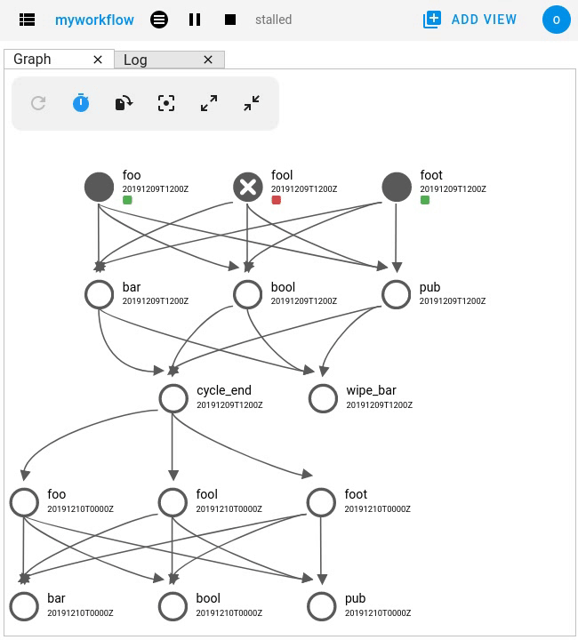

Cylc Broadcast
Cylc “Broadcasts” allow us to override the [runtime] settings of tasks.
Broadcasts can target specific cycles, families or tasks.
Broadcasts can be helpful for:
Quickly developing tasks without having to edit and reload the workflow configuration.
Sending small amounts of data from a running task to other upcoming tasks (e.g. file paths).
Reconfiguring production workflows while they are running.
Broadcasts which target specific cycles will eventually be expired when no longer needed.
Otherwise, broadcasts last for the life of the workflow and will persist if the workflow is shutdown and restarted (unless manually “cleared”).
See also
Issuing Broadcasts
CLI
Some examples of issuing broadcasts using the cylc broacast CLI command:
# set or update the environment variable "ANSWER" for all tasks
cylc broadcast myworkflow -s '[environment]ANSWER=42'
# amend the directives for all tasks in the cycle "2000"
cylc broadcast myworkflow -p 2000 -s '[directives]--memory=2GB'
# change the platform all tasks in the family "FOO" will submit on
cylc broadcast myworkflow -n FOO -s 'platform=my-hpc'
The cylc broadcast command can be run from within tasks as a means to
communicate small amounts of data back to the scheduler for subsequent tasks to
use. Note that this will not work for remote task platforms which have been
configured to use polling -
global.cylc[platforms][<platform name>]communication method=poll.
For more information, run cylc broadcast --help.
GUI
Broadcasts can also be issued from the GUI in a similar way by choosing “Broadcast” from the task menu.
Additionally, the GUI provides a utility called “Edit Runtime” which loads the tasks configuration into a form. Any changes you make are then broadcasted to the task:
{kind=link}
Expiry
Broadcasts which target specific cycles will eventually expire (i.e. be deleted) as the workflow moves on, to avoid gradual accumulation (note broadcasts are persisted when the workflow restarts).
Expiry Point
Broadcasts expire once they are no longer required by upcoming tasks. The exact point at which a broadcast is expired depends on:
The oldest cycle in the workflow to contain active tasks.
The longest cycling recurrence in the workflow.
Broadcasts which are older than the oldest active cycle minus the duration of the longest recurrence will be cleared.
For example, for the following workflow:
[scheduling]
[[graph]]
P1Y = foo
P2Y = bar
P3Y = baz
The longest cycling recurrence is P3Y.
If there were no more tasks left running in the cycle 2000, then broadcasts
for cycles earlier than 1997 (2000 - P3Y) would be expired.
This is designed to keep broadcasts as far back as the previous instance of each task, in case you want to re-run it.
Broadcasting To Historical Cycles
Broadcasts targeting historical cycles may be expired as soon as they are issued as the result of broadcast expiry.
However, broadcast expiry does not occur while the workflow is paused, so you can pause the workflow, do the broadcast, trigger the tasks, and then resume the workflow, e.g:
cylc pause my-workflow
cylc broadcast my-workflow -p 2000 -s ...
cylc trigger my-workflow
cylc play my-workflow